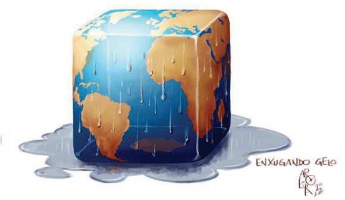

Conteúdo:
Questão 01
(UESPI 2017) A questão ambiental nos dias atuais é tomada como preocupação mundial. Várias conferências vêm sendo promovidas pelas Nações Unidas na tentativa de estabelecer acordos para minimizar os impactos ambientais em escala global e conflitos decorrentes da possibilidade de escassez de recursos naturais. Considerando a relevância da temática, leia as afirmações e marque a alternativa CORRETA.
I - Os desastres naturais acontecem porque existem muitas pessoas que vivem em locais nos quais podem ocorrer eventos naturais potencialmente catastróficos e quase todas as áreas habitadas do mundo estão sujeitas a esses desastres.
II - Os danos ambientais são resultados da poluição da atmosfera associada à industrialização, principalmente dos países desenvolvidos. Outros países em desenvolvimento tentam acelerar o processo de industrialização, intensificando a degradação ambiental. Esse é um problema mundial, pois afeta diretamente as atividades humanas, em diferentes regiões do mundo e as medidas para conter, ou minimizar estes impactos devem envolver a cooperação internacional.
III - Os diversos desastres naturais, como terremotos, incêndios, inundações e tempestades, espacialmente distribuídos na superfície terrestre, são diretamente relacionados ao meio físico.
a) Somente a afirmativa III é correta.
b) Somente a afirmativa II é correta.
c) Somente a afirmativa I é correta.
d) Todas as afirmativas estão corretas.
e) Todas as afirmativas estão erradas.
Questão 02
(ENEM 2016)

AROEIRA. Disponível em: http:appsodia.ig.com.br. Acesso em: 19 jun. 2012 (adaptado.)
O processo ambiental ao qual a charge faz referência tende a se agravar em função do(a)
a) expansão gradual das áreas de desertificação.
b) aumento acelerado do nível médio dos oceanos.
c) controle eficaz da emissão antrópica de gases poluentes.
d) crescimento paulatino do uso de fontes energéticas alternativas.
e) dissenso político entre países componentes de acordos climáticos internacionais.
Comentário:
Trata-se do aquecimento global, intensificado pela emissão de gases-estufa, cuja redução sofre entraves provocados pela falta de vontade de muitos países em modificar sua postura produtiva, recusando-se a adotar os acordos climáticos criados.
Questão 03
(ACAFE 2014)
“Podemos definir bioma como um conjunto de ecossistemas que funcionam de forma estável. Um bioma é caracterizado por um tipo principal de vegetação (num mesmo bioma podem existir diversos tipos de vegetação).
Os seres vivos de um bioma vivem de forma adaptada às condições da natureza (vegetação, chuva, umidade, calor, etc.) existentes.
Os biomas brasileiros caracterizam-se, no geral, por uma grande diversidade de animais e vegetais (biodiversidade)”.
Fonte: http:www.suapesquisa.com/geografia.htm
Nesse sentido, assinale a alternativa correta.
a) Pelo que se depreende do texto, nos diferentes biomas encontramos ecossistemas diversos, isto é, cada bioma pode conter vários ecossistemas.
b) Biomas e ecossistemas são sinônimos, com características distintas.
c) A diversidade biológica é maior nos ecossistemas que nos biomas.
d) Os ecossistemas brasileiros apresentam maior diversidade biológica que os biomas.
Questão 04
(UEPB 2011)
"Todas as atividades humanas, desde o surgimento da humanidade na Terra, implicam no chamado ´consumo` de energia. Isto porque para produzir bens necessários à vida, produzir alimentos, prazer e bem-estar, não há como não consumir energia, ou melhor, não converter energia. Vida humana e conversão de energia são sinônimos e não existe qualquer possibilidade de separar um do outro."
(WALDMAN, Maurício. Para onde vamos? S.d., p. 10. Disponível em: http://www.mw.pro.br>)
Apesar de toda importância do consumo de energia para a vida moderna, podemos afirmar que sua forma de utilização no mundo contemporâneo continua a ser insustentável porque:
a) o consumo de energia é desigual entre ricos e pobres, sendo que os pobres continuam a utilizar fontes arcaicas que são muito mais danosas ao meio.
b) as chamadas fontes alternativas que são não-poluentes são de custos elevadíssimos e só podem ser produzidas em pequena escala para consumo muito reduzido.
c) a energia hidroelétrica que assumiu a liderança no consumo mundial necessita da construção de grandes represas que causam grandes impactos ambientais.
d) as principais matrizes energéticas do mundo continuam a ser o petróleo e o carvão, que são fontes não-renováveis e muito poluentes.
e) a energia nuclear, que é a solução mais viável para a questão energética do mundo, depende do enriquecimento do urânio, cuja tecnologia é controlada por poucos países e inacessível para a grande maioria.
Matriz energética um conjunto de fontes de energia ofertado no país para captar, distribuir e utilizar energia nos setores comerciais, industriais e residenciais. A matriz representa a quantidade de energia disponível em um país, e a origem dessa energia pode ser de fontes renováveis ou não renováveis.
Questão 05
(UNIFOR CE 2010) Os principais relatórios do Programa das Nações Unidas para o Meio Ambiente abordam os problemas centrais que afligem a humanidade; dentre eles, destacamos: a concentração de gás carbônico na atmosfera; a crescente escassez de água potável; a degradação dos solos por erosão; a poluição dos rios, lagos, zonas costeiras e baías; os desmatamentos constantes; e o crescimento da população e suas mudanças de padrão do consumo, que geram mais resíduos poluentes, principalmente nas áreas urbanas.
Já os principais agentes poluentes são: a camada de ozônio, produzida pela acumulação de gases na atmosfera, e os resíduos nucleares que atingem negativamente a natureza e o ambiente humano. O maior problema detectado é a elevação da temperatura global.
Com relação a essas questões ambientais, a nova ordem internacional tem exigido das nações mudanças em seus modelos de produção, evoluindo para o conceito de desenvolvimento sustentável.
A respeito deste assunto, é CORRETO afirmar:
a) A necessidade de crescimento econômico, quer da indústria ou da agropecuária não pode prescindir da preocupação de sua sustentabilidade.
b) Desses problemas todos, o único agente poluente a preocupar é o que produz resíduos nucleares.
c) Por serem problemas que afetam a todos, a preocupação ambiental é amplamente respeitada pelas nações mais desenvolvidas.
d) A preocupação do controle ambiental sempre esteve presente entre as nações, desde a Revolução Industrial do século XVIII.
e) As mudanças de padrão de consumo, principalmente dos países industrializados têm contribuído para reduzir os riscos ambientais.
Questão 06
(UFG 2009) A questão ambiental, uma das principais pautas do espaço contemporâneo mundial, possibilitou o surgimento de várias vertentes e concepções políticas. É característica do Preservacionismo:
a) estabelecer códigos normativos e práticas de proteção aos recursos naturais.
b) associar o uso dos recursos naturais ao progresso industrial.
c) desenvolver medidas em comum acordo com populações envolvidas.
d) desenvolver técnicas de contenção de problemas ambientais urbanos e rurais.
e) definir áreas prioritárias para o uso sustentável da biodiversidade.
Questão 07
(UNIMONTES-MG 2009) Leia o texto.
“O estudo das características mais significativas dos seres vivos e de sua distribuição pela superfície terrestre é objeto de diferentes disciplinas, entre elas a Geografia, que desenvolve esse estudo por um ramo específico, a Biogeografia.”
ALMEIDA, M. Geografia Global - Geral e do Brasil. São Paulo: Escala Educacional, 2008.
Esse ramo da Geografia estuda, entre outros temas, a distribuição da vegetação que é influenciada pelos seguintes fatores, EXCETO
a) O clima, através da temperatura, da umidade, da luminosidade e dos ventos, faz com que a vegetação se desenvolva de acordo com o fornecimento desses elementos.
b) O solo serve como sustentação física da planta e fonte de nutrição, por isso, quanto mais fértil o solo, mais nutrida será a vegetação.
c) O tipo de rocha de uma área determinará as características da vegetação, uma vez que os nutrientes da rocha alimentam os vegetais.
d) O relevo interfere indiretamente no desenvolvimento da vegetação, pois altera as condições edáficas e climáticas.
Questão 08
(UECE 2008) Nas regiões de altas latitudes e próximas ao Círculo Polar Ártico, os horizontes superficiais do solo permanecem gelados. É comum, durante poucos meses do ano, a ocorrência de um tipo de vegetação de pequeno porte e que é constituído, basicamente, por musgos e liquens.
Assinale a alternativa que contém essa vegetação.
a) Estepe.
b) Araucárias.
c) Tundra.
d) Campos cerrados.
Questão 09
(UEL 2007)
“Há uma área de pesquisa ligada à ecologia que analisa essencialmente como as espécies reagem aos diferentes tipos de solo, climas e formas de relevo. Tais estudos geraram um grande volume de conhecimentos sobre o papel limitante desempenhado pelos fatores abióticos na distribuição: sobre a natureza, sobre a estrutura das comunidades e sobre a capacidade fisiológica dos seres vivos de suportar as condições de determinados ambientes. Esse conhecimento tem sido muito útil na agricultura, na biologia da conservação, no planejamento ambiental, entre outros."
Fonte: FURLAN, S. A. In: VENTURI, L. A. B. (org.), Praticando Geografia, técnicas de campo e laboratório. São Paulo: Oficina de Textos, 2005, p. 99.
Assinale a alternativa correta que corresponde à área de pesquisa mencionada no texto:
a) Biogeografia.
b) Geomorfologia.
c) Ecologia.
d) Fitogeografia.
e) Zoogeografia.
É uma ciência que estuda o padrão de distribuição de organismos na Terra, bem como as variações nesse padrão que ocorreram no passado e ainda ocorrem no presente
Questão 10
(UFPB 2006) No que se refere às grandes paisagens naturais e suas modificações, é correto afirmar:
a) Os desertos correspondem às áreas que sofreram modificações resultantes da exploração irracional do petróleo.
b) As pradarias e as estepes apresentam modificações drásticas, na sua biodiversidade, devido à introdução de espécies arbóreas típicas da savana.
c) A tundra é uma vegetação rasteira bastante alterada pela expansão agrícola nas áreas circumpolares.
d) A savana corresponde a um bioma característico de áreas temperadas e subtropicais, com impactos ambientais resultantes da introdução dos transgênicos.
e) As florestas equatoriais e tropicais, as mais ricas em biodiversidade, sofrem grandes impactos ambientais decorrentes da ação das madeireiras.